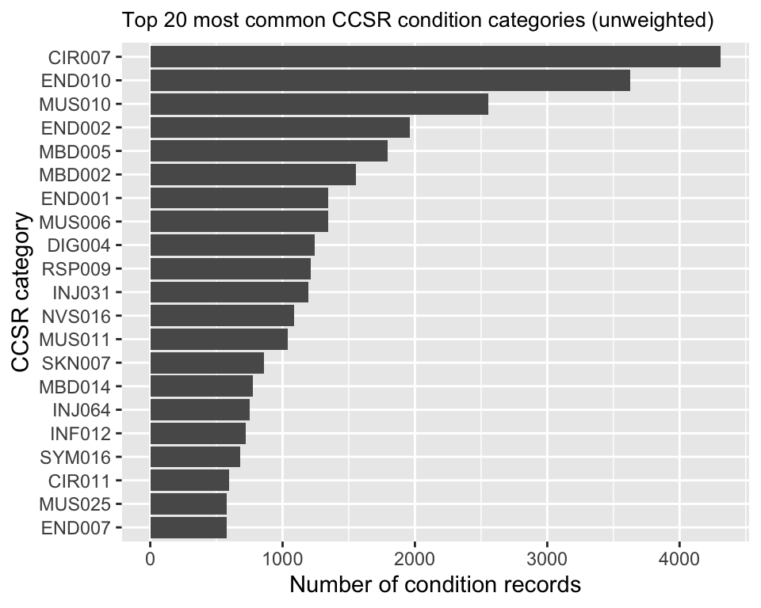
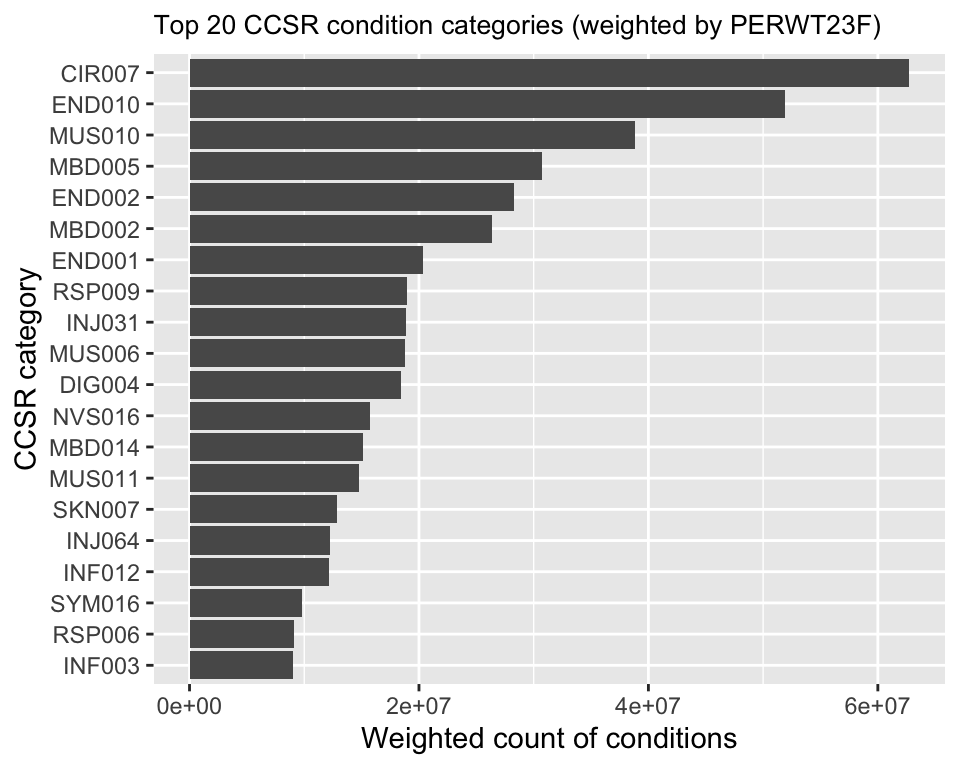
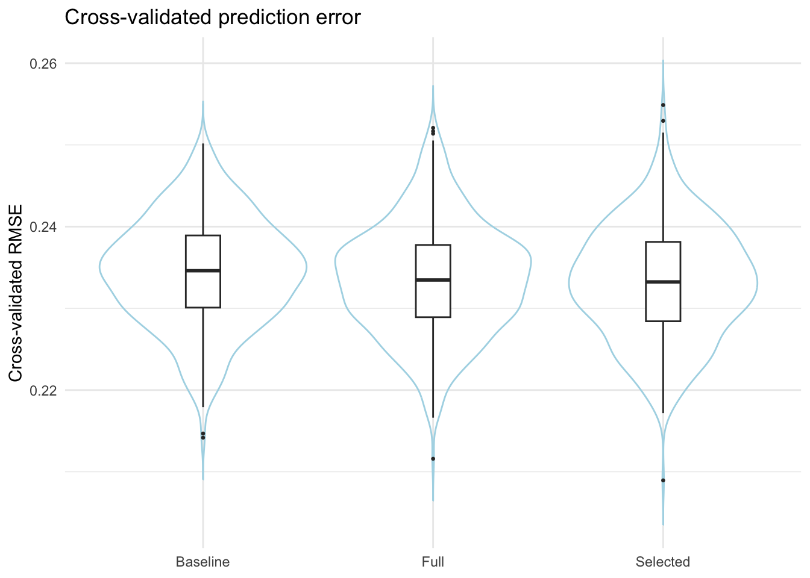

Project Report
Team: Charline Gu (jg4891), Yaxuan Deng (yd2810), Yuanyuan Zhang (yz4982), Wen Li (wl3013)
Motivation
In 2023, healthcare spending in the United States accounted for 17.6% of the national GDP, totaling approximately $4.9 trillion. Despite this immense expenditure, millions of Americans continue to struggle with chronic diseases, and healthcare delivery remains highly fragmented. This inefficiency not only strains the system financially but also results in poorer outcomes for those who need care the most. One of the central challenges is the “hot spotters” problem—a small subset of patients who incur the highest costs often receive the least coordinated and least effective care. Understanding who these patients are, what conditions they have, and how their costs evolve over time is critical for developing targeted interventions that improve health outcomes while reducing unnecessary spending. Motivated by these challenges, this project aims to analyze the relationship between healthcare costs and medical conditions to uncover patterns among high-cost patients. By identifying key demographic and clinical characteristics associated with elevated healthcare spending, we aim to inform strategies for more effective resource allocation and more integrated models of care.
Initial Question
We initially aimed to answer the following key questions:
Who are the patients that incur the highest healthcare expenditures in 2023 (top 1%, top 5%, top 10%) within the U.S. as captured by MEPS?
What demographic and socioeconomic characteristics are associated with being high-cost?
Using CCSR classification, what is the role of multimorbidity and major chronic conditions in predicting whether someone is high-cost?
During the process of analysis, our questions became more concrete. For example, we extend from descriptive to predictive framing, exploring how well we can predict whether a person is high-cost using demographics, income/poverty, insurance, and multimorbidity. In addition, while generating descriptive statistics, we realized that many patterns were more easily understood when visualized interactively. This led us to develop a Shiny dashboard, allowing users to:
- select age group, insurance, and sex
- dynamically view expenditure distributions
- compare demographic subgroups and explore how spending varies across key characteristics
Throughout the modeling and exploratory analysis process, several
deeper questions arose. We started to think about what is the practical
value of the predictive model. Even if certain variables statistically
improve prediction of high-cost status, does the model improve enough to
matter for policy or care management? Our cross-validated RMSE
comparison across baseline, full, and selected models pushed us to
reflect on whether the added complexity yields meaningful practical
improvement. But since the prevalence of high-cost is too
low and noises exist, how to make such predictions practically
meaningful remains an open question.
Together, these new questions extend our original motivation of understanding “who” the high-cost patients are toward how we might use routinely available information (demographics, income, insurance, diagnoses) to identify and prioritize them for targeted interventions.
Data sources and access
Our analysis uses publicly available data from the Medical Expenditure Panel Survey (MEPS), conducted by the Agency for Healthcare Research and Quality (AHRQ). Specifically, we draw on two 2023 public-use files:
2023 Full-Year Consolidated Data File (HC-251)
This file provides person-level information on annual health care expenditures, demographics, insurance coverage, and survey design variables for the U.S. civilian noninstitutionalized population.2023 Medical Conditions File (HC-249)
This file contains encounter-level information on medical conditions reported during MEPS interviews, including condition identifiers and Clinical Classifications Software Refined (CCSR) codes.
Both files were downloaded from the MEPS website as standardized
.ssp files. We imported them into R using the
MEPS R package and the read_MEPS() function,
which implements the recommended MEPS data-reading workflow and
preserves variable formats. For convenience in downstream analysis, we
converted all variable names to lowercase immediately after import.
Unit of analysis and key variables
The primary unit of analysis in this project is the individual (person). From the full-year consolidated file (HC-251), we retain:
- Survey design variables
varstr,varpsu: variance strata and primary sampling unit identifiers
perwt23f: person-level survey weight
- Expenditure variable
totexp23: total health care expenditures in 2023, summing all payments from all payers and service types at the person level
- Core demographic and socioeconomic variables
agelast: age at the end of 2023
sex: sex (1 = male, 2 = female)
racethx: detailed race/ethnicity categories
povcat23: family income relative to the federal poverty line (1–5)
inscov23: insurance coverage category (1 = any private, 2 = public only, 3 = uninsured)
From the conditions file (HC-249), we retain:
- Linkage and survey design variables:
dupersid,condidx,varstr,varpsu,perwt23f
- Condition classification: CCSR codes
(
ccsr1x–ccsr4x), which we later collapse to a single primary condition code per record.
These variables form the basis for defining high-cost groups, describing population characteristics, and identifying the most commonly treated conditions among high-expenditure patients.
Cleaning and preparation of the person-level file (HC-251)
We begin by creating a working copy of the full-year consolidated file and applying several cleaning steps:
Restriction to positive weights
MEPS uses person-level weights to represent the target population. We restrict the analytic dataset to records withperwt23f > 0, which excludes ineligible or unweighted respondents and ensures that weighted estimates correspond to the 2023 U.S. civilian noninstitutionalized population.Standardizing missing values
MEPS encodes various types of missing or inapplicable responses using negative numeric codes (e.g., -1, -7, -8, -9, -15). To avoid treating these codes as valid values in summaries or models, we loop over all numeric variables and recode these negative codes toNA. This harmonized missing-value convention allows base R andsurveyfunctions to automatically exclude missing observations when computing estimates.Variable selection
To keep the working dataset focused and efficient, we subset to a minimal set of variables required for our analyses: the person identifier (dupersid), survey design variables,totexp23, and the demographic and socioeconomic variables listed above. This curated dataset (fyc23_clean) is used to construct the survey design object and all subsequent person-level analyses.Re-defining the survey design
After cleaning and subsetting, we reconstruct a survey design object using thesurveypackage, specifying:- clustering by
varpsu
- stratification by
varstr
- weighting by
perwt23f
nest = TRUEto correctly reflect the multi-stage design
All weighted estimates in the project—such as proportions, means, and quantiles—are computed under this survey design.
- clustering by
Construction of demographic and socioeconomic categories
For descriptive and stratified analyses, we recode several MEPS variables into interpretable categorical factors:
Age groups (
age_cat4)
We categorizeagelastinto four life-stage groups commonly used in health services research:- 0–17 years
- 18–44 years
- 45–64 years
- 65 years and older
The factor is explicitly ordered from youngest to oldest to facilitate interpretation of age patterns.
- 0–17 years
Sex (
sex_f)
We recodesexinto a labeled factor with levels “Male” and “Female”, matching the original coding (1 and 2, respectively).Race/ethnicity (
race4)
Usingracethx, we construct a four-category race/ethnicity variable:- Hispanic
- Non-Hispanic White (NH White)
- Non-Hispanic Black (NH Black)
- Non-Hispanic Asian/Other (NH Asian/Other), combining smaller non-White, non-Black race categories to improve stability of estimates
The reference level is set to NH White, which is consistent with many MEPS reports and facilitates interpretation of racial/ethnic comparisons.
- Hispanic
Income relative to poverty (
povcat_f)
povcat23(1–5) is recoded into labeled categories:- Poor
- Near-poor
- Low income
- Middle income
- High income
Note that “High income” in MEPS corresponds to family income ≥ 4 times the federal poverty line; this group primarily represents middle-class and above rather than the extremely wealthy.
- Poor
Insurance coverage (
inscov_f)
We recodeinscov23into:- Any private insurance
- Public insurance only
- Uninsured
- Any private insurance
After creating these factors, we reconstruct the survey design object so that all downstream analyses use the updated categorical variables.
Defining expenditure groups (Top 1%, Top 5%, Top 10%, Bottom 50%)
Following the approach in the MEPS Statistical Brief on the
concentration of healthcare expenditures, we use survey-weighted
quantiles of totexp23 to define mutually exclusive
expenditure groups:
- Using
svyquantile()under our survey design, we compute the weighted:- 50th percentile (median)
- 90th percentile
- 95th percentile
- 99th percentile
- 50th percentile (median)
Letting these cutpoints be \(p_{50}\), \(p_{90}\), \(p_{95}\), and \(p_{99}\), we create a categorical variable
exp_group:
- Top 1%:
totexp23 ≥ p99
- Top 5%:
p95 ≤ totexp23 < p99
- Top 10%:
p90 ≤ totexp23 < p95
- Bottom 50%:
totexp23 ≤ p50
- 50–90%: all remaining individuals with expenditures between the median and the 90th percentile
The factor is ordered as: Bottom 50%, 50–90%, Top 10%, Top 5%, Top 1%. This structure allows us to align our results with prior MEPS briefs and to focus particularly on the small subset of “high-cost” patients in the Top 1% and Top 5%.
We then reconstruct the survey design once more using
fyc23_clean with exp_group included, enabling
direct computation of weighted distributions of demographic and clinical
characteristics within each expenditure group.
Cleaning and preparation of the conditions file (HC-249)
To study the clinical profile of high-cost patients, we process the 2023 Medical Conditions file as follows:
Standardizing missing values
As in the person file, we convert negative numeric codes (e.g., -1, -7, -8, -9, -15) toNAacross all numeric variables. For the CCSR code variables (ccsr1x–ccsr4x), which are stored as character strings, we replace sentinel values such as"-1"and"-15"withNA.Defining a primary CCSR code (
ccsr_main)
Each condition record may have up to four CCSR codes. To simplify analysis and ensure that each record is assigned a single primary condition category, we constructccsr_mainusing a hierarchical rule:- Start with
ccsr1x
- If
ccsr1xis missing, useccsr2x
- If still missing, fall back to
ccsr3x, and thenccsr4xif necessary
We drop records for which all four CCSR codes are missing so that the conditions dataset only includes observations with a valid clinical classification.
- Start with
Variable selection
We retain only variables needed for linkage and weighting in later analyses:dupersid(person identifier) andcondidx(condition identifier)
varstr,varpsu,perwt23f
ccsr_main
This cleaned conditions dataset (
cond23_clean) can be merged with the person-level dataset bydupersid, allowing us to describe the most common CCSR categories among individuals in the Top 1%, Top 5%, and other expenditure groups.
Quality checks
To verify the integrity of our cleaned data and survey design, we conduct several diagnostic checks:
- We confirm that the sum of survey weights in the person-level design
is on the order of the U.S. population and that the weighted totals by
age group, race/ethnicity, poverty category, and insurance status
closely match the overall total (up to small rounding
differences).
- We inspect cross-tabulations between original MEPS codes and our
recoded factors (e.g.,
racethxvs.race4,povcat23vs.povcat_f,inscov23vs.inscov_f) to ensure that category mappings are correct.
- We compute weighted frequencies and proportions for
exp_groupto confirm that the quantile-based cutpoints produce reasonable shares of the population in each expenditure category.
These steps provide confidence that our analytic datasets accurately reflect the intended MEPS design and that our derived variables are correctly constructed. All data cleaning and processing is implemented in R and is fully reproducible in the project code.
Data cleaning code
The full, reproducible code used to implement the cleaning steps described above is provided below. Readers who are primarily interested in results may skip this section.
Click to show / hide full data cleaning and preparation code
# Load in packages
library(devtools)
library(tidyverse)
library(readr)
library(readxl)
library(haven)
library(survey)
library(MEPS)
library(knitr)
# Read "2023 MEPS" data
# 2023 Full-Year Consolidated（HC-251）
## Personnel expenses + Demographics + Sampling design variables
fyc23 <- read_MEPS(file = "h251")
cond23 <- read_MEPS(file = "h249")
## Read "2023 Medical Conditions" data（HC-249）
## Diseases / CCSR
names(fyc23) <- tolower(names(fyc23))
names(cond23) <- tolower(names(cond23))
des23 <- svydesign(
ids = ~varpsu,
strata = ~varstr,
weights= ~perwt23f,
data = fyc23,
nest = TRUE
)
# This chunk only need to run in "Console" once, do not run when knitting the file
# devtools::install_github("e-mitchell/meps_r_pkg/MEPS")
# library(MEPS)
# Quick check of the total fee variable (totexp23)
summary(fyc23$totexp23)## Min. 1st Qu. Median Mean 3rd Qu. Max.
## 0.0 299.5 1816.0 8422.0 7087.0 574675.0names(fyc23)[1:30]## [1] "duid" "pid" "dupersid" "panel" "datayear" "famid31"
## [7] "famid42" "famid53" "famid23" "famidyr" "cpsfamid" "fcsz1231"
## [13] "fcrp1231" "ruletr31" "ruletr42" "ruletr53" "ruletr23" "rusize31"
## [19] "rusize42" "rusize53" "rusize23" "ruclas31" "ruclas42" "ruclas53"
## [25] "ruclas23" "famsze31" "famsze42" "famsze53" "famsze23" "fmrs1231"grep("23", names(fyc23), value = TRUE)[1:20]## [1] "famid23" "fcsz1231" "fcrp1231" "ruletr23" "rusize23" "ruclas23"
## [7] "famsze23" "fmrs1231" "fams1231" "region23" "refprs23" "resp23"
## [13] "proxy23" "endrfm23" "endrfy23" "inscop23" "insc1231" "elgrnd23"
## [19] "age23x" "marry23x"nrow(fyc23) ## [1] 18919## data clean
fyc23_clean <- fyc23
# Only keep the individuals with positive weight
fyc23_clean <- fyc23_clean[fyc23_clean$perwt23f > 0, ]
# Change all the missing value (-1, -7, -8, -9, -15) into NA
num_vars <- sapply(fyc23_clean, is.numeric)
for (j in which(num_vars)) {
x <- fyc23_clean[[j]]
x[x %in% c(-1, -7, -8, -9, -15)] <- NA
fyc23_clean[[j]] <- x
}
# Only keep the variables needed for this project (could extend later)
keep_vars <- c(
"dupersid", "panel", "varstr", "varpsu", "perwt23f",
"totexp23",
"agelast", "sex", "racethx",
"povcat23", "inscov23"
)
fyc23_clean <- fyc23_clean[ , keep_vars]
# Use cleaned data to rebuild "survey design"
des23 <- svydesign(
ids = ~varpsu,
strata = ~varstr,
weights= ~perwt23f,
data = fyc23_clean,
nest = TRUE
)
## Demographic variables
# 2.1 Build blank variable columns
fyc23_clean$age_cat4 <- NA
fyc23_clean$sex_f <- NA
fyc23_clean$race4 <- NA
fyc23_clean$povcat_f <- NA
fyc23_clean$inscov_f <- NA
# 2.2 Age groups：0–17, 18–44, 45–64, 65+
fyc23_clean$age_cat4[fyc23_clean$agelast <= 17] <- "0-17"
fyc23_clean$age_cat4[fyc23_clean$agelast >= 18 & fyc23_clean$agelast <= 44] <- "18-44"
fyc23_clean$age_cat4[fyc23_clean$agelast >= 45 & fyc23_clean$agelast <= 64] <- "45-64"
fyc23_clean$age_cat4[fyc23_clean$agelast >= 65] <- "65+"
fyc23_clean$age_cat4 <- factor(
fyc23_clean$age_cat4,
levels = c("0-17", "18-44", "45-64", "65+")
)
# 2.3 Gender: 1=Male, 2=Female
fyc23_clean$sex_f[fyc23_clean$sex == 1] <- "Male"
fyc23_clean$sex_f[fyc23_clean$sex == 2] <- "Female"
fyc23_clean$sex_f <- factor(
fyc23_clean$sex_f,
levels = c("Male", "Female")
)
# 2.4 Race: NH White, NH Black, Hispanic, NH Asian/Other
fyc23_clean$race4[fyc23_clean$racethx == 1] <- "Hispanic"
fyc23_clean$race4[fyc23_clean$racethx == 2] <- "NH White"
fyc23_clean$race4[fyc23_clean$racethx == 3] <- "NH Black"
fyc23_clean$race4[fyc23_clean$racethx %in% c(4, 5)] <- "NH Asian/Other"
fyc23_clean$race4 <- factor(
fyc23_clean$race4,
levels = c("NH White", "NH Black", "Hispanic", "NH Asian/Other")
)
# 2.5 Poverty line groups (POVCAT23): 1–5
pov_labels <- c(
"Poor", "Near-poor", "Low income",
"Middle income", "High income"
)
fyc23_clean$povcat_f <- factor(
fyc23_clean$povcat23,
levels = 1:5,
labels = pov_labels
)
# 2.6 Insurance type (INSCOV23): 1 any private, 2 public only, 3 uninsured
ins_labels <- c("Any private", "Public only", "Uninsured")
fyc23_clean$inscov_f <- factor(
fyc23_clean$inscov23,
levels = 1:3,
labels = ins_labels
)
# 2.7 Use updated data to rebuild "design"
des23 <- svydesign(
ids = ~varpsu,
strata = ~varstr,
weights= ~perwt23f,
data = fyc23_clean,
nest = TRUE
)
# Quick checks
svytable(~ age_cat4, des23)## age_cat4
## 0-17 18-44 45-64 65+
## 72310868 118897360 81736013 61586033svytable(~ race4, des23)## race4
## NH White NH Black Hispanic NH Asian/Other
## 191904354 41881236 65759049 34985634svytable(~ povcat_f, des23)## povcat_f
## Poor Near-poor Low income Middle income High income
## 37085125 12759876 40476857 96119086 148089329svytable(~ inscov_f, des23)## inscov_f
## Any private Public only Uninsured
## 215911541 97419962 21198770table(fyc23_clean$age_cat4, useNA = "ifany")##
## 0-17 18-44 45-64 65+
## 3556 5543 4756 4608tapply(
fyc23_clean$agelast,
fyc23_clean$age_cat4,
function(x) range(x, na.rm = TRUE)
)## $`0-17`
## [1] 0 17
##
## $`18-44`
## [1] 18 44
##
## $`45-64`
## [1] 45 64
##
## $`65+`
## [1] 65 85table(fyc23_clean$racethx, fyc23_clean$race4, useNA = "ifany")##
## NH White NH Black Hispanic NH Asian/Other
## 1 0 0 4087 0
## 2 10112 0 0 0
## 3 0 2448 0 0
## 4 0 0 0 1133
## 5 0 0 0 683table(fyc23_clean$povcat23, fyc23_clean$povcat_f, useNA = "ifany")##
## Poor Near-poor Low income Middle income High income
## 1 2803 0 0 0 0
## 2 0 868 0 0 0
## 3 0 0 2421 0 0
## 4 0 0 0 5145 0
## 5 0 0 0 0 7226table(fyc23_clean$inscov23, fyc23_clean$inscov_f, useNA = "ifany")##
## Any private Public only Uninsured
## 1 10833 0 0
## 2 0 6431 0
## 3 0 0 1199# Define Top 1%、Top 5%、Top 10%、Bottom 50%
exp_cuts <- svyquantile(
~ totexp23,
design = des23,
quantiles = c(0.50, 0.90, 0.95, 0.99),
ci = FALSE
)
exp_cuts## $totexp23
## 0.5 0.9 0.95 0.99
## [1,] 1583 18330 34150 93443
##
## attr(,"hasci")
## [1] FALSE
## attr(,"class")
## [1] "newsvyquantile"str(exp_cuts)## List of 1
## $ totexp23: num [1, 1:4] 1583 18330 34150 93443
## ..- attr(*, "dimnames")=List of 2
## .. ..$ : NULL
## .. ..$ : chr [1:4] "0.5" "0.9" "0.95" "0.99"
## - attr(*, "hasci")= logi FALSE
## - attr(*, "class")= chr "newsvyquantile"q_vec <- as.numeric(exp_cuts$totexp23)
p50 <- q_vec[1]
p90 <- q_vec[2]
p95 <- q_vec[3]
p99 <- q_vec[4]
fyc23_clean$exp_group <- NA
fyc23_clean$exp_group[fyc23_clean$totexp23 >= p99] <- "Top 1%"
fyc23_clean$exp_group[fyc23_clean$totexp23 >= p95 & fyc23_clean$totexp23 < p99] <- "Top 5%"
fyc23_clean$exp_group[fyc23_clean$totexp23 >= p90 & fyc23_clean$totexp23 < p95] <- "Top 10%"
fyc23_clean$exp_group[fyc23_clean$totexp23 <= p50] <- "Bottom 50%"
fyc23_clean$exp_group[
is.na(fyc23_clean$exp_group) & !is.na(fyc23_clean$totexp23)
] <- "50–90%"
fyc23_clean$exp_group <- factor(
fyc23_clean$exp_group,
levels = c("Bottom 50%", "50–90%", "Top 10%", "Top 5%", "Top 1%")
)
des23 <- svydesign(
ids = ~varpsu,
strata = ~varstr,
weights= ~perwt23f,
data = fyc23_clean,
nest = TRUE
)
svytable(~ exp_group, des23)## exp_group
## Bottom 50% 50–90% Top 10% Top 5% Top 1%
## 167271763 133802060 16720928 13369123 3366399svytable(~ exp_group, des23) / sum(weights(des23))## exp_group
## Bottom 50% 50–90% Top 10% Top 5% Top 1%
## 0.50001981 0.39996996 0.04998330 0.03996387 0.01006306# Handle the data of "cond23"
cond23_clean <- cond23
num_vars_c <- sapply(cond23_clean, is.numeric)
for (j in which(num_vars_c)) {
x <- cond23_clean[[j]]
x[x %in% c(-1, -7, -8, -9, -15)] <- NA
cond23_clean[[j]] <- x
}
ccsr_cols <- grep("^ccsr", names(cond23_clean), value = TRUE)
for (nm in ccsr_cols) {
x <- cond23_clean[[nm]]
x[x %in% c("-1", "-15")] <- NA
cond23_clean[[nm]] <- x
}
cond23_clean$ccsr_main <- cond23_clean$ccsr1x
idx_na <- is.na(cond23_clean$ccsr_main) & !is.na(cond23_clean$ccsr2x)
cond23_clean$ccsr_main[idx_na] <- cond23_clean$ccsr2x[idx_na]
idx_na <- is.na(cond23_clean$ccsr_main) & !is.na(cond23_clean$ccsr3x)
cond23_clean$ccsr_main[idx_na] <- cond23_clean$ccsr3x[idx_na]
idx_na <- is.na(cond23_clean$ccsr_main) & !is.na(cond23_clean$ccsr4x)
cond23_clean$ccsr_main[idx_na] <- cond23_clean$ccsr4x[idx_na]
cond23_clean <- cond23_clean[!is.na(cond23_clean$ccsr_main), ]
keep_cond_vars <- c(
"dupersid", "condidx",
"varstr", "varpsu", "perwt23f",
"ccsr_main"
)
cond23_clean <- cond23_clean[ , keep_cond_vars]
head(sort(table(cond23_clean$ccsr_main), decreasing = TRUE), 10)##
## CIR007 END010 MUS010 END002 MBD005 MBD002 END001 MUS006 DIG004 RSP009
## 4312 3626 2557 1960 1791 1557 1346 1345 1245 1212# Double checks
total_pop <- sum(weights(des23))
total_pop## [1] 334530273tab_age <- svytable(~ age_cat4, des23)
tab_race <- svytable(~ race4, des23)
tab_pov <- svytable(~ povcat_f, des23)
tab_ins <- svytable(~ inscov_f, des23)
sum_age <- sum(tab_age)
sum_race <- sum(tab_race)
sum_pov <- sum(tab_pov)
sum_ins <- sum(tab_ins)
c(
total_pop = total_pop,
sum_age = sum_age,
sum_race = sum_race,
sum_pov = sum_pov,
sum_ins = sum_ins
)## total_pop sum_age sum_race sum_pov sum_ins
## 334530273 334530273 334530273 334530273 334530273c(
age_minus_total = sum_age - total_pop,
race_minus_total = sum_race - total_pop,
pov_minus_total = sum_pov - total_pop,
ins_minus_total = sum_ins - total_pop
)## age_minus_total race_minus_total pov_minus_total ins_minus_total
## 0 0 0 0tab_age## age_cat4
## 0-17 18-44 45-64 65+
## 72310868 118897360 81736013 61586033prop_age <- prop.table(tab_age)
prop_age## age_cat4
## 0-17 18-44 45-64 65+
## 0.2161564 0.3554158 0.2443307 0.1840970sum(prop_age)## [1] 1tab_race## race4
## NH White NH Black Hispanic NH Asian/Other
## 191904354 41881236 65759049 34985634prop_race <- prop.table(tab_race)
prop_race## race4
## NH White NH Black Hispanic NH Asian/Other
## 0.5736532 0.1251942 0.1965713 0.1045814sum(prop_race)## [1] 1tab_pov## povcat_f
## Poor Near-poor Low income Middle income High income
## 37085125 12759876 40476857 96119086 148089329prop_pov <- prop.table(tab_pov)
prop_pov## povcat_f
## Poor Near-poor Low income Middle income High income
## 0.11085731 0.03814266 0.12099609 0.28732553 0.44267841sum(prop_pov)## [1] 1tab_ins## inscov_f
## Any private Public only Uninsured
## 215911541 97419962 21198770prop_ins <- prop.table(tab_ins)
prop_ins## inscov_f
## Any private Public only Uninsured
## 0.64541705 0.29121419 0.06336876sum(prop_ins)## [1] 1table(fyc23_clean$age_cat4, useNA = "ifany")##
## 0-17 18-44 45-64 65+
## 3556 5543 4756 4608tapply(
fyc23_clean$agelast,
fyc23_clean$age_cat4,
function(x) range(x, na.rm = TRUE)
)## $`0-17`
## [1] 0 17
##
## $`18-44`
## [1] 18 44
##
## $`45-64`
## [1] 45 64
##
## $`65+`
## [1] 65 85table(fyc23_clean$racethx, fyc23_clean$race4, useNA = "ifany")##
## NH White NH Black Hispanic NH Asian/Other
## 1 0 0 4087 0
## 2 10112 0 0 0
## 3 0 2448 0 0
## 4 0 0 0 1133
## 5 0 0 0 683table(fyc23_clean$povcat23, fyc23_clean$povcat_f, useNA = "ifany")##
## Poor Near-poor Low income Middle income High income
## 1 2803 0 0 0 0
## 2 0 868 0 0 0
## 3 0 0 2421 0 0
## 4 0 0 0 5145 0
## 5 0 0 0 0 7226table(fyc23_clean$inscov23, fyc23_clean$inscov_f, useNA = "ifany")##
## Any private Public only Uninsured
## 1 10833 0 0
## 2 0 6431 0
## 3 0 0 1199tab_exp <- svytable(~ exp_group, des23)
tab_exp## exp_group
## Bottom 50% 50–90% Top 10% Top 5% Top 1%
## 167271763 133802060 16720928 13369123 3366399prop_exp <- prop.table(tab_exp)
prop_exp## exp_group
## Bottom 50% 50–90% Top 10% Top 5% Top 1%
## 0.50001981 0.39996996 0.04998330 0.03996387 0.01006306sum(prop_exp)## [1] 1Demographic Information
From the age distribution table, among 18463 participants, 19% of individuals age under 17 years old. 30% of participants aged between 18 and 44 years old. About 26% participants age between 45 and 64 years old. 25% of participants aged above 65 years old.
| Age Category | n | percent |
|---|---|---|
| 0-17 | 3556 | 19.3 |
| 18-44 | 5543 | 30.0 |
| 45-64 | 4756 | 25.8 |
| 65+ | 4608 | 25.0 |
| Total | 18463 | 100.0 |
We can see that 8783 (47.6%) individuals are male and 9680 (52.4%) individuals are female.
| Sex | n | percent |
|---|---|---|
| Male | 8783 | 47.6 |
| Female | 9680 | 52.4 |
| Total | 18463 | 100.0 |
However, from the race distribution table, it seems that the distribution is not equal among white, black, hispanic, asian, and other people. 54.8% participants are white. 13% are black. 22.1% are hispanic. Asians/other only takes up 9.8% of the sample population.
| Race Category | n | percent |
|---|---|---|
| NH White | 10112 | 54.8 |
| NH Black | 2448 | 13.3 |
| Hispanic | 4087 | 22.1 |
| NH Asian/Other | 1816 | 9.8 |
| Total | 18463 | 100.0 |
Interactive Dashboard
We also created an interactive dashboard via rshiny to show the expenditure for each race or sex. You can zoom in or zoom out by dragging the parts of plot. We created a violin plot to show total health expenditure in 2023 by 4 age groups and different races, which is in different colors. We also created a histogram of number of people in four income levels, near-poor, poor, low-income, middle-income, and high-income, grouped by insurance types. In addition, we created a scatterplot to show the health expenditure in 2023 among different insurance types, grouped by sex. The interactive dashboard can be accessed at here.
Additional Analysis
Survey-Weighted Regression Modeling
To complement our descriptive analyses, we conducted a series of survey-weighted logistic regression models to examine factors associated with being a high-cost individual (defined as the top 5% of total expenditures based on survey-weighted percentiles).
All models were estimated using the MEPS complex survey design, incorporating strata, PSUs, and person-level weights.
Model 1: Baseline demographic and socioeconomic predictors
First, we fit an initial model with 6 predictors:
- age group (
age_cat4) - sex (
sex_f) - race/ethnicity (
race4) - poverty/income category (
povcat_f) - insurance coverage (
inscov_f) - multimorbidity (
n_ccsr)
baseline_formula <- high_cost ~ age_cat4 + sex_f + race4 + povcat_f + inscov_f + n_ccsr
| Variable | Estimate | P-value |
|---|---|---|
| Age 18–44 | -0.007 | 0.9765 |
| Age 45–64 | 0.678 | 0.0025** |
| Age 65+ | 0.480 | 0.0347* |
| Female | -0.214 | 0.0324* |
| NH Black | 0.022 | 0.8889 |
| Hispanic | -0.163 | 0.2220 |
| NH Asian/Other | -0.067 | 0.6910 |
| Near-poor | -0.060 | 0.7540 |
| Low income | -0.158 | 0.4738 |
| Middle income | -0.210 | 0.1955 |
| High income | -0.061 | 0.7031 |
| Public only insurance | -0.033 | 0.7061 |
| Uninsured | -0.938 | 0.0451* |
| Number of CCSR categories | 0.214 | 0.0000*** |
As is shown is the table, individuals aged 45–64 and
65+ were significantly more likely to be high-cost compared
with the reference age group. Female patients also
exhibited slightly higher odds of being high-cost. Lack of insurance
coverage (Uninsured) was another significant risk factor,
highlighting the vulnerability of those without financial protection.
Finally, the number of CCSR condition categories, our
measure or multimorbidity, was significant and demonstrated the largest
effect size.
Model 2: Full model including major CCSR condition indicators
We extended the baseline model by adding binary indicators for the most common CCSR categories observed in the sample. We first summarized all condition records using both unweighted frequency counts and survey-weighted counts.

The two rankings were largely consistent, and we selected the union of the top conditions from both lists to ensure clinically relevant and high-prevalence categories were included. This process resulted in 11 CCSR binary indicators, each representing whether a person had at least one condition in that category. Including:
- CIR007: Essential hypertension
- END010: Disorders of lipid metabolism
- MUS010: Musculoskeletal pain
- END002: Diabetes mellitus without complication
- MBD005: Anxiety and fear-related disorders
- MBD002: Depressive disorder
- END001: Thyroid disorders
- MUS006: Osteoarthritis
- DIG004: Esophageal disorders
- RSP009: Asthma
- INJ031: Allergic reactions
full_formula <- high_cost ~ age_cat4 + sex_f + race4 + povcat_f + inscov_f + n_ccsr
| Variable | Estimate | P-value |
|---|---|---|
| Age 18–44 | 0.102 | 0.6709 |
| Age 45–64 | 0.832 | 2e-04*** |
| Age 65+ | 0.594 | 0.0113* |
| Female | -0.157 | 0.1529 |
| NH Black | -0.043 | 0.7984 |
| Hispanic | -0.225 | 0.1002 |
| NH Asian/Other | -0.093 | 0.5901 |
| Near-poor | -0.079 | 0.6924 |
| Low income | -0.149 | 0.501 |
| Middle income | -0.232 | 0.1486 |
| High income | -0.088 | 0.5782 |
| Public only insurance | -0.021 | 0.8096 |
| Uninsured | -0.949 | 0.0422* |
| Number of CCSR categories | 0.266 | 0*** |
| Essential hypertension | -0.194 | 0.1088 |
| Disorders of lipid metabolism | -0.444 | 2e-04*** |
| Musculoskeletal pain | -0.168 | 0.1024 |
| Diabetes mellitus (no complication) | 0.336 | 0.001*** |
| Anxiety disorders | -0.377 | 0.0119* |
| Depressive disorder | -0.399 | 0.0074** |
| Thyroid disorders | -0.343 | 0.0136* |
| Osteoarthritis | 0.002 | 0.9865 |
| Esophageal disorders | -0.031 | 0.8243 |
| Asthma | -0.363 | 0.0115* |
| Allergic reactions | -0.125 | 0.4059 |
In the full model, disorders of lipid metabolism
(END010), diabetes mellitus without complication
(END002), depressive disorder (MBD002),
anxiety disorders (MBD005), thyroid disorders
(END001), and asthma (RSP009) show strong
associations with higher healthcare spending.
Compared with Model 1, Female is no longer
a significant predictors, while others ramain significant.
Model 3: Selected model with significant predictors
For Model 3, we only add the predictors that are
significant in Model 1 and Model 2, reducing
model complexity.
selected_formula <- high_cost ~ age_cat4 + sex_f + inscov_f + n_ccsr + END010 + END002 + MBD005 + MBD002 + END001 + RSP009
| Variable | Estimate | P-value |
|---|---|---|
| Age 18–44 | 0.084 | 0.7273 |
| Age 45–64 | 0.785 | 5e-04*** |
| Age 65+ | 0.544 | 0.0172* |
| Female | -0.155 | 0.1385 |
| Public only insurance | -0.036 | 0.6861 |
| Uninsured | -1.022 | 0.0282* |
| Number of CCSR categories | 0.257 | 0*** |
| Disorders of lipid metabolism | -0.484 | 0*** |
| Diabetes mellitus (no complication) | 0.313 | 0.0019** |
| Anxiety disorders | -0.347 | 0.0184* |
| Depressive disorder | -0.377 | 0.0107* |
| Thyroid disorders | -0.324 | 0.0173* |
| Asthma | -0.350 | 0.015* |
Model Comparison
We compared the performance of the three fitted models using AIC. A lower AIC indicates a better trade-off between model fit and complexity.
| Model | AIC |
|---|---|
| Baseline model | 4840.25 |
| Full model | 4797.00 |
| Selected model | 4780.37 |
Accordingly, the Selected model achieves the lowest AIC
4780.37. This suggests that adding clinically relevant CCSR indicators
improves model fit, and further removing non-significant predictors
yields a more efficient model without sacrificing performance.
To assess the predictive performance across different cohorts, we next perform repeated K-fold cross-validation on all three models and compare their RMSE distributions. We chose to repeat 100 times with K=5.

Across 100 repeated 5-fold cross-validations, all three models yielded very similar RMSE values. The selected model achieved the lowest average RMSE (≈0.2331). Although the improvement is modest, this suggests that adding a small set of targeted CCSR indicators contributes slightly better predictive accuracy than including all conditions or using demographics alone.
The full, reproducible code used to implement the regression modeling and cross-validation procedures described above is provided below. Readers who are primarily interested in results may skip this section.
Click to show / hide full regression modeling code
## Regression
library(dplyr)
library(ggplot2)
library(tidyr)
library(purrr)
library(survey)
## ---- create multimorbidity (person_ccsr) ----
person_ccsr <- cond23_clean %>%
group_by(dupersid) %>%
summarise(
n_ccsr = n_distinct(ccsr_main), # number of distinct CCSR categories
.groups = "drop"
) %>%
mutate(
multi_morbidity = if_else(n_ccsr >= 3, 1, 0) # threshold can be customized
)
## ---- CCSR frequency (unweighted) ----
ccsr_counts <- cond23_clean %>%
count(ccsr_main, sort = TRUE)
head(ccsr_counts, 10)## # A tibble: 10 × 2
## ccsr_main n
## <chr> <int>
## 1 CIR007 4312
## 2 END010 3626
## 3 MUS010 2557
## 4 END002 1960
## 5 MBD005 1791
## 6 MBD002 1557
## 7 END001 1346
## 8 MUS006 1345
## 9 DIG004 1245
## 10 RSP009 1212ccsr_top20 <- ccsr_counts %>%
slice_max(n, n = 20)
ggplot(ccsr_top20,
aes(x = reorder(ccsr_main, n),
y = n)) +
geom_col() +
coord_flip() +
labs(
x = "CCSR category",
y = "Number of condition records",
title = "Top 20 most common CCSR condition categories (unweighted)"
)
## ---- CCSR frequency (weighted) ----
ccsr_w_counts <- cond23_clean %>%
group_by(ccsr_main) %>%
summarise(
w_count = sum(perwt23f, na.rm = TRUE),
.groups = "drop"
) %>%
arrange(desc(w_count))
ccsr_w_top20 <- ccsr_w_counts %>%
slice_max(w_count, n = 20)
ggplot(ccsr_w_top20,
aes(x = reorder(ccsr_main, w_count),
y = w_count)) +
geom_col() +
coord_flip() +
labs(
x = "CCSR category",
y = "Weighted count of conditions",
title = "Top 20 CCSR condition categories (weighted by PERWT23F)"
)
## ---- compare top10 CCSR: unweighted vs weighted ----
data.frame(
unweighted_top10 = ccsr_counts$ccsr_main[1:10],
weighted_top10 = ccsr_w_counts$ccsr_main[1:10]
)## unweighted_top10 weighted_top10
## 1 CIR007 CIR007
## 2 END010 END010
## 3 MUS010 MUS010
## 4 END002 MBD005
## 5 MBD005 END002
## 6 MBD002 MBD002
## 7 END001 END001
## 8 MUS006 RSP009
## 9 DIG004 INJ031
## 10 RSP009 MUS006ccsr_union <- union(
ccsr_counts$ccsr_main[1:10],
ccsr_w_counts$ccsr_main[1:10]
)
ccsr_union## [1] "CIR007" "END010" "MUS010" "END002" "MBD005" "MBD002" "END001" "MUS006"
## [9] "DIG004" "RSP009" "INJ031"## ---- create binary disease indicators in person_ccsr ----
for (disease in ccsr_union) {
var_name <- disease
person_ccsr[[var_name]] <- ifelse(
person_ccsr$dupersid %in% cond23_clean$dupersid[cond23_clean$ccsr_main == disease],
1,
0
)
}
## ---- merge to FYC file and define high_cost ----
fyc23_model <- fyc23_clean %>%
left_join(person_ccsr, by = "dupersid") %>%
mutate(
high_cost = ifelse(exp_group == "Top 5%", 1, 0) # outcome: in top 5% vs others
)
## ---- survey design object ----
des_model <- svydesign(
ids = ~varpsu,
strata = ~varstr,
weights = ~perwt23f,
data = fyc23_model,
nest = TRUE
)
## ---- baseline model ----
baseline_formula <- high_cost ~
age_cat4 + sex_f + race4 + povcat_f + inscov_f + n_ccsr
model_baseline <- svyglm(
baseline_formula,
design = des_model,
family = quasibinomial()
)
summary(model_baseline)##
## Call:
## svyglm(formula = baseline_formula, design = des_model, family = quasibinomial())
##
## Survey design:
## svydesign(ids = ~varpsu, strata = ~varstr, weights = ~perwt23f,
## data = fyc23_model, nest = TRUE)
##
## Coefficients:
## Estimate Std. Error t value Pr(>|t|)
## (Intercept) -4.104708 0.227373 -18.053 < 2e-16 ***
## age_cat418-44 -0.007022 0.237934 -0.030 0.97650
## age_cat445-64 0.677880 0.220487 3.074 0.00253 **
## age_cat465+ 0.480386 0.225351 2.132 0.03474 *
## sex_fFemale -0.213897 0.098997 -2.161 0.03239 *
## race4NH Black 0.022008 0.157238 0.140 0.88888
## race4Hispanic -0.163021 0.132912 -1.227 0.22201
## race4NH Asian/Other -0.067057 0.168351 -0.398 0.69099
## povcat_fNear-poor -0.060137 0.191515 -0.314 0.75397
## povcat_fLow income -0.157595 0.219433 -0.718 0.47381
## povcat_fMiddle income -0.210476 0.161846 -1.300 0.19553
## povcat_fHigh income -0.061194 0.160228 -0.382 0.70309
## inscov_fPublic only -0.032550 0.086140 -0.378 0.70609
## inscov_fUninsured -0.937976 0.464114 -2.021 0.04515 *
## n_ccsr 0.214228 0.011780 18.185 < 2e-16 ***
## ---
## Signif. codes: 0 '***' 0.001 '**' 0.01 '*' 0.05 '.' 0.1 ' ' 1
##
## (Dispersion parameter for quasibinomial family taken to be 0.8830159)
##
## Number of Fisher Scoring iterations: 6## ---- full model with top CCSR indicators ----
ccsr_vars <- c(
"CIR007","END010","MUS010","END002","MBD005",
"MBD002","END001","MUS006","DIG004","RSP009","INJ031"
)
full_formula <- update(
baseline_formula,
paste(". ~ . +", paste(ccsr_vars, collapse = " + "))
)
model_full <- svyglm(
full_formula,
design = des_model,
family = quasibinomial()
)
summary(model_full)##
## Call:
## svyglm(formula = full_formula, design = des_model, family = quasibinomial())
##
## Survey design:
## svydesign(ids = ~varpsu, strata = ~varstr, weights = ~perwt23f,
## data = fyc23_model, nest = TRUE)
##
## Coefficients:
## Estimate Std. Error t value Pr(>|t|)
## (Intercept) -4.142628 0.228470 -18.132 < 2e-16 ***
## age_cat418-44 0.102474 0.240611 0.426 0.670882
## age_cat445-64 0.831983 0.217967 3.817 0.000207 ***
## age_cat465+ 0.594221 0.231250 2.570 0.011292 *
## sex_fFemale -0.156823 0.109086 -1.438 0.152913
## race4NH Black -0.042759 0.167079 -0.256 0.798411
## race4Hispanic -0.224776 0.135783 -1.655 0.100218
## race4NH Asian/Other -0.093139 0.172478 -0.540 0.590104
## povcat_fNear-poor -0.078894 0.199010 -0.396 0.692427
## povcat_fLow income -0.148990 0.220808 -0.675 0.501016
## povcat_fMiddle income -0.232388 0.159920 -1.453 0.148556
## povcat_fHigh income -0.088322 0.158463 -0.557 0.578221
## inscov_fPublic only -0.021281 0.088128 -0.241 0.809563
## inscov_fUninsured -0.948724 0.462411 -2.052 0.042177 *
## n_ccsr 0.266333 0.015616 17.056 < 2e-16 ***
## CIR007 -0.194120 0.120247 -1.614 0.108842
## END010 -0.443579 0.116416 -3.810 0.000212 ***
## MUS010 -0.167892 0.102078 -1.645 0.102402
## END002 0.335854 0.099413 3.378 0.000959 ***
## MBD005 -0.377359 0.147979 -2.550 0.011912 *
## MBD002 -0.398973 0.146619 -2.721 0.007383 **
## END001 -0.342818 0.137000 -2.502 0.013559 *
## MUS006 0.002394 0.141474 0.017 0.986525
## DIG004 -0.031370 0.141049 -0.222 0.824340
## RSP009 -0.363132 0.141636 -2.564 0.011472 *
## INJ031 -0.125316 0.150305 -0.834 0.405932
## ---
## Signif. codes: 0 '***' 0.001 '**' 0.01 '*' 0.05 '.' 0.1 ' ' 1
##
## (Dispersion parameter for quasibinomial family taken to be 0.8593806)
##
## Number of Fisher Scoring iterations: 6## ---- selected model (significant variables) ----
selected_vars <- c(
"age_cat4",
"sex_f",
"inscov_f",
"n_ccsr",
"END010","END002","MBD005","MBD002","END001","RSP009"
)
full_formula2 <- as.formula(
paste("high_cost ~", paste(selected_vars, collapse = " + "))
)
model_selected <- svyglm(
full_formula2,
design = des_model,
family = quasibinomial()
)
summary(model_selected)##
## Call:
## svyglm(formula = full_formula2, design = des_model, family = quasibinomial())
##
## Survey design:
## svydesign(ids = ~varpsu, strata = ~varstr, weights = ~perwt23f,
## data = fyc23_model, nest = TRUE)
##
## Coefficients:
## Estimate Std. Error t value Pr(>|t|)
## (Intercept) -4.31773 0.20571 -20.989 < 2e-16 ***
## age_cat418-44 0.08445 0.24168 0.349 0.727272
## age_cat445-64 0.78462 0.22112 3.548 0.000524 ***
## age_cat465+ 0.54424 0.22584 2.410 0.017221 *
## sex_fFemale -0.15467 0.10382 -1.490 0.138489
## inscov_fPublic only -0.03556 0.08779 -0.405 0.686059
## inscov_fUninsured -1.02154 0.46093 -2.216 0.028245 *
## n_ccsr 0.25654 0.01327 19.329 < 2e-16 ***
## END010 -0.48358 0.11477 -4.214 4.41e-05 ***
## END002 0.31291 0.09915 3.156 0.001949 **
## MBD005 -0.34744 0.14565 -2.385 0.018365 *
## MBD002 -0.37714 0.14576 -2.587 0.010662 *
## END001 -0.32440 0.13471 -2.408 0.017301 *
## RSP009 -0.34996 0.14209 -2.463 0.014956 *
## ---
## Signif. codes: 0 '***' 0.001 '**' 0.01 '*' 0.05 '.' 0.1 ' ' 1
##
## (Dispersion parameter for quasibinomial family taken to be 0.8704885)
##
## Number of Fisher Scoring iterations: 6## ---- compare AIC ----
AIC(model_baseline)## eff.p AIC deltabar
## 17.758600 4840.253423 1.268471AIC(model_full)## eff.p AIC deltabar
## 31.453566 4796.998920 1.258143AIC(model_selected)## eff.p AIC deltabar
## 16.489108 4780.365412 1.268393## ---- CV helper function (simple glm, no survey weights) ----
cv_rmse <- function(formula, data, K = 5) {
n <- nrow(data)
folds <- sample(rep(1:K, length.out = n))
rmse_vec <- numeric(K)
for (k in 1:K) {
train <- data[folds != k, ]
test <- data[folds == k, ]
fit <- glm(formula, data = train, family = binomial())
p_hat <- predict(fit, newdata = test, type = "response")
rmse_vec[k] <- sqrt(mean((p_hat - test$high_cost)^2))
}
rmse_vec
}
## ---- prepare data for CV ----
set.seed(1234)
n_rep <- 100
K <- 5
df_cv <- fyc23_model %>%
select(
high_cost,
age_cat4, sex_f, race4, povcat_f, inscov_f, n_ccsr,
CIR007, END010, MUS010, END002, MBD005, MBD002, END001, MUS006, DIG004, RSP009, INJ031
) %>%
drop_na() %>%
mutate(
high_cost = as.numeric(high_cost)
)
## ---- run CV for three models ----
cv_results <- map_dfr(1:n_rep, ~{
tibble(
model = "Baseline",
rmse = cv_rmse(baseline_formula, df_cv, K = K)
) %>%
bind_rows(
tibble(
model = "Full",
rmse = cv_rmse(full_formula, df_cv, K = K)
),
tibble(
model = "Selected",
rmse = cv_rmse(full_formula2, df_cv, K = K)
)
)
})
## ---- summarise CV results ----
cv_summary <- cv_results %>%
group_by(model) %>%
summarise(mean_rmse = mean(rmse)) %>%
arrange(model)
cv_summary## # A tibble: 3 × 2
## model mean_rmse
## <chr> <dbl>
## 1 Baseline 0.234
## 2 Full 0.234
## 3 Selected 0.233## ---- plot CV RMSE ----
ggplot(cv_results, aes(x = model, y = rmse)) +
geom_violin(trim = FALSE, fill = NA, color = "lightblue") +
geom_boxplot(width = 0.15, fill = "white", outlier.size = 0.5) +
labs(
x = NULL,
y = "Cross-validated RMSE",
title = "Cross-validated prediction error for three models"
) +
theme_minimal()
Discussion
Our findings indicate that a parsimonious set of demographic and clinical predictors can meaningfully distinguish high cost patients in the 2023 MEPS sample. The final model incorporates age, insurance status, multimorbidity burden, and six key CCSR based condition indicators, suggesting that a relatively small and interpretable set of health and socioeconomic characteristics is sufficient to capture much of the observable contrast between high and lower cost individuals. Although overall predictive performance is modest, which is typical for rare and highly variable cost outcomes in population based survey data, the model nonetheless provides actionable signal that may support earlier identification of high cost patients and inform the design and targeting of care management or cost containment interventions in value based care settings.